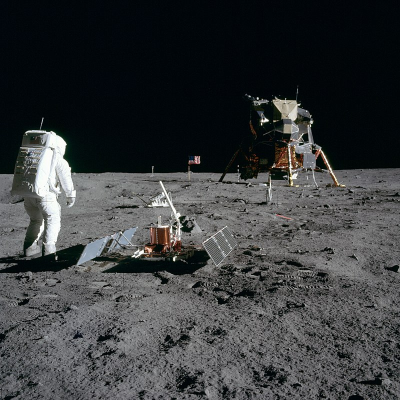

Три, два, один, запуск. Через 109 годин та 42 хвилини після злету космічного корабля «Аполлон-11» американський астронавт Ніл Армстронґ зробить перший крок на місячну поверхню і назве його «маленьким кроком для людини і велетенським стрибком для людства».
Перебування на Місяці
Астронавти спершу виконали операції, які імітували старт з Місяця, щоб переконатися у справності відповідних систем. Зовнішня бортова камера, встановлена на місячному модулі, забезпечила пряму трансляцію виходу Армстронга на місячну поверхню.
Армстронг спустився на поверхню Місяця 21 липня 1969 року о 02 годині 56 хвилин 20 секунд за Грінвічем.
Зробивши крок з драбинки місячного модулю на поверхню Місяця, він вимовив знамениту фразу: «Це один маленький крок для людини, але гігантський стрибок для всього людства».
Олдрін вийшов на поверхню Місяця через 15 хвилин після Армстронга. Олдрін випробував різні способи швидкого пересування поверхнею Місяця. Найдоцільнішою астронавти визнали звичайну ходьбу.
Астронавти пройшлися поверхнею, зібрали зразки місячного ґрунту і установили телевізійну камеру. Потім астронавти установили прапор США
(Конгрес США до польоту відкинув пропозицію NASA встановити на Місяці прапор ООН замість національного), провели двохвилинний сеанс зв'язку з президентом Ніксоном, встановили на поверхні Місяця наукові прилади (сейсмометр і відбивач лазерного променя).
Після встановлення приладів астронавти додатково зібрали зразки місячного ґрунту і повернулися на модуль.При ресурсі автономної системи життєзабезпечення близько 4 годин, Олдрін пробув на поверхні Місяця понад півтори години, Армстронг — приблизно 2 години 10 хвилин.
Після повернення до місячної кабіни астронавти склали непотрібні речі у мішок, розгерметизували кабіну і викинули мішок на поверхню Місяця. Надалі астронавти перевірили бортові системи, поїли і поспали близько 7 годин.
Завдання польоту
- Посадка на Місяць у західній частині Моря Спокою (База Спокою),
- збір зразків місячного ґрунту,
- фотографування поверхні Місяця,
- встановлення на поверхні Місяця приладів,
- телевізійні сеанси з поверхні Місяця.